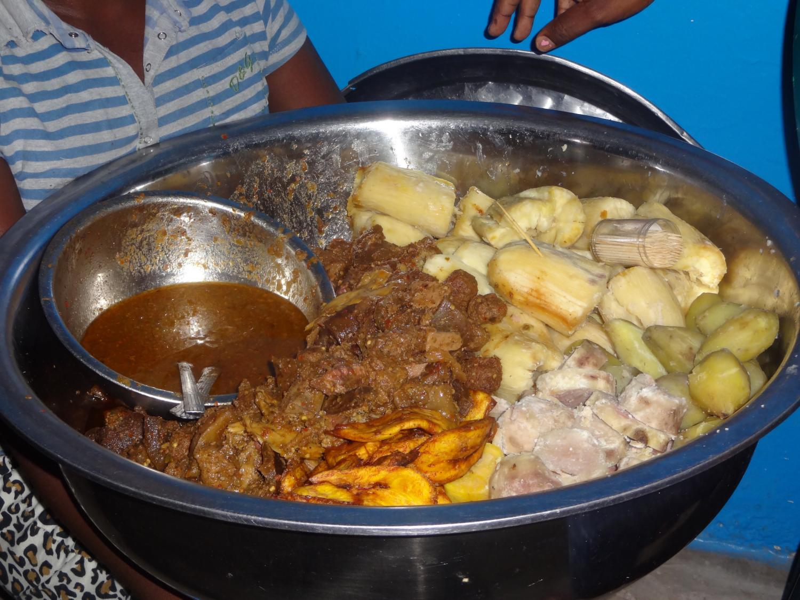
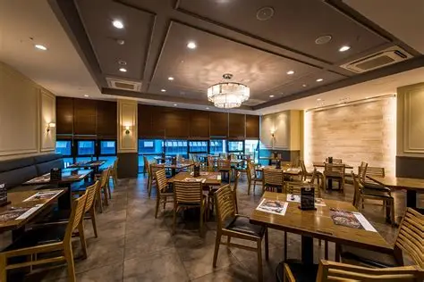
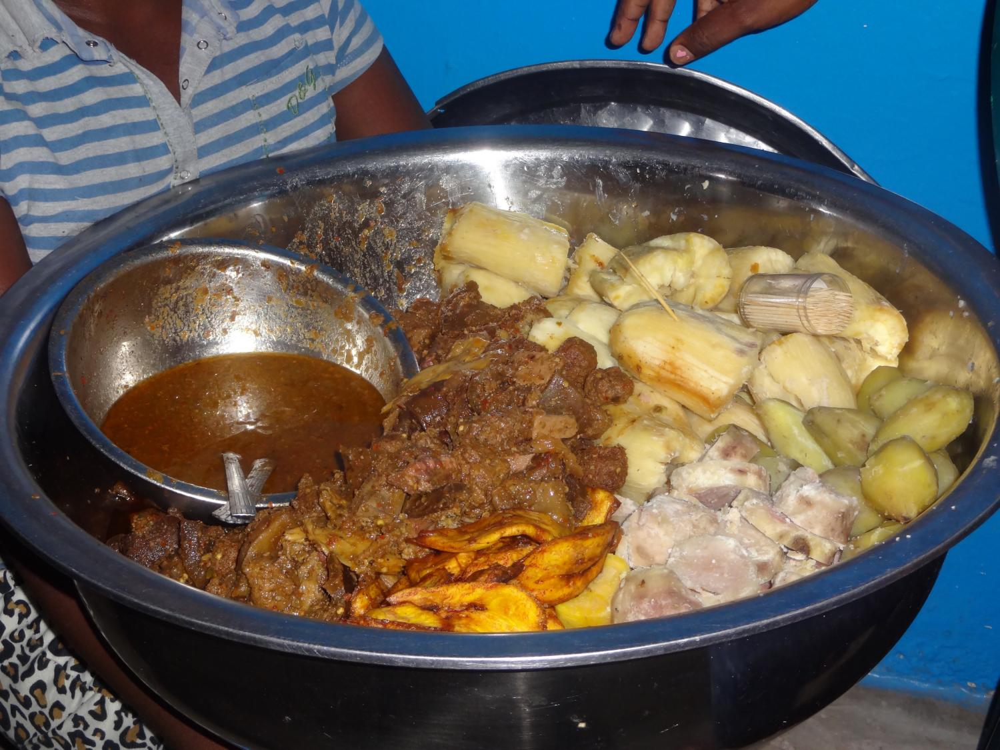
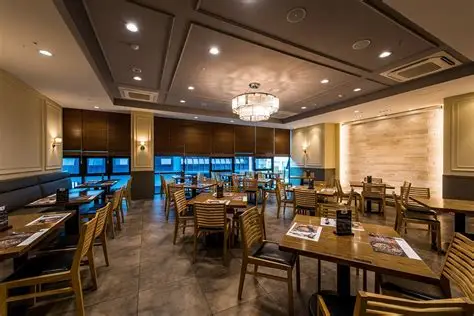

Serving authentic Liberian dishes made with love, tradition, and passion.

The LiberianPot began with a simple dream — to bring the warmth, culture, and taste of Liberia to every plate. Founded in 2020 in Monrovia, our restaurant celebrates the heart of African cuisine with every dish we serve.
From Cassava Leaf to Fufu and Soup, each recipe is carefully crafted using local ingredients and family traditions passed down for generations.
To deliver authentic Liberian flavors that bring people together, while promoting local farmers, supporting our community, and sharing the pride of our culinary heritage with the world.
 


